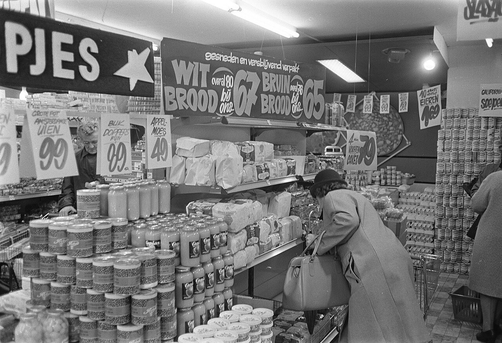
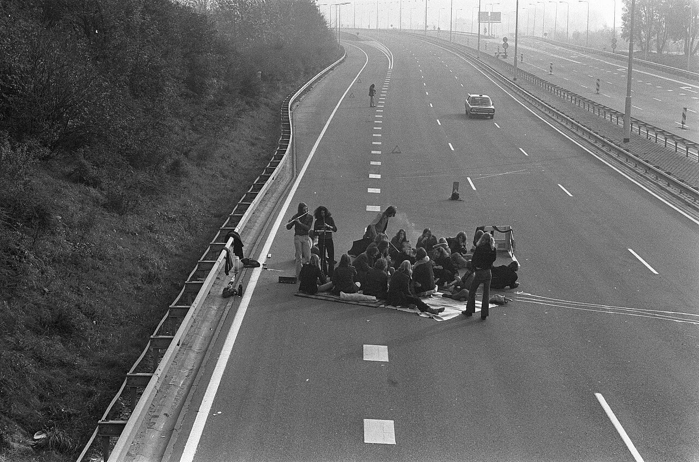
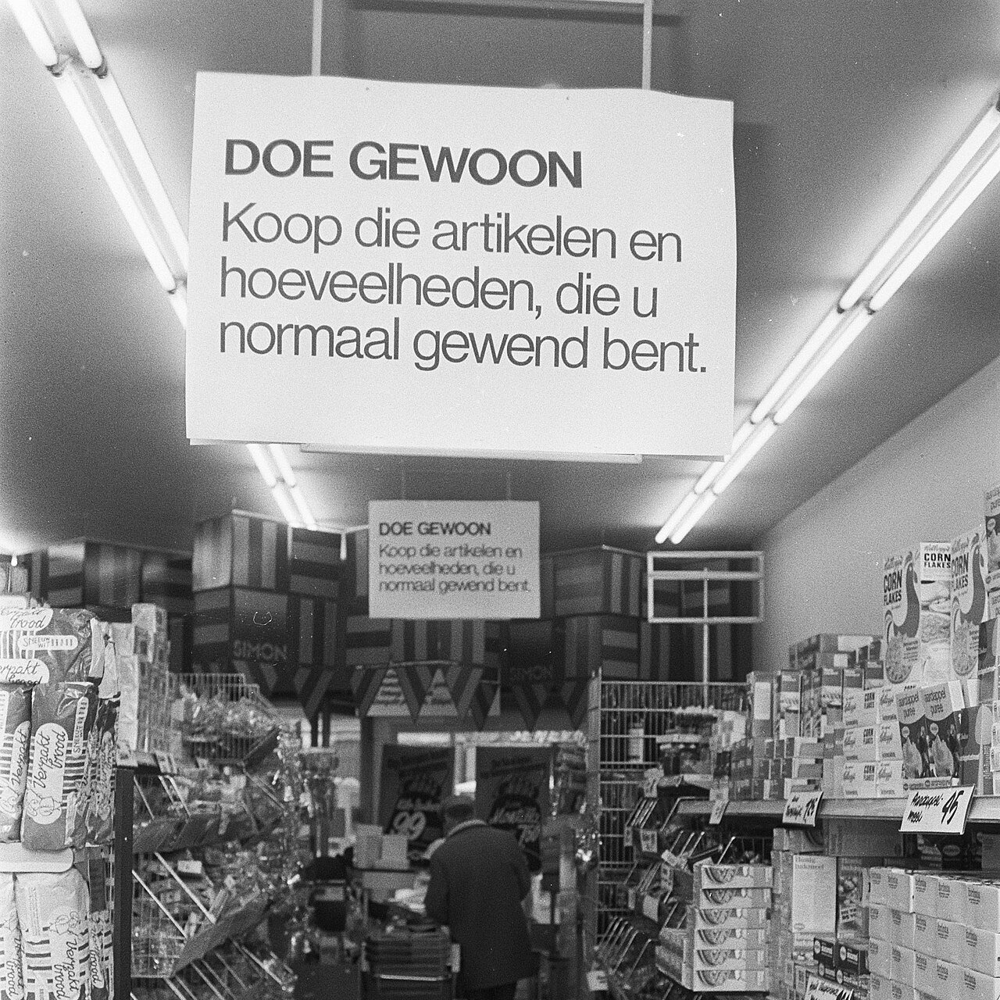
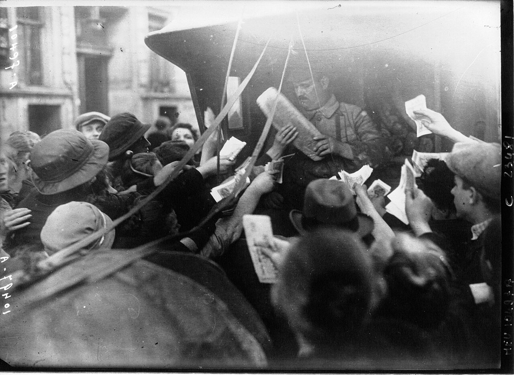

東京、1970年。町の中華そば（ラーメン）は、1杯96円でした。同じ調査で、2026年10月は623円。50年あまりで約6.5倍になりました。
1本目の記事では、金の重しが外れたお札は、刷ろうと思えばいくらでも増やせることを見ました。そして、その同じお札で買える物は、少しずつ減ってきました。ラーメンの中身はそれほど変わらないのに、なぜ値段は上がっていくのでしょう。
東京のラーメン1杯は、50年あまりで6倍以上になりました。物の値段がそろって上がるしくみと、上がりすぎた国で起きたことを、図と写真でたどります。値段がずっと変わらないのは、本当によいことなのでしょうか。
東京、1970年。町の中華そば（ラーメン）は、1杯96円でした。同じ調査で、2026年10月は623円。50年あまりで約6.5倍になりました。
1本目の記事では、金の重しが外れたお札は、刷ろうと思えばいくらでも増やせることを見ました。そして、その同じお札で買える物は、少しずつ減ってきました。ラーメンの中身はそれほど変わらないのに、なぜ値段は上がっていくのでしょう。
物よりお金が速く増え、お金の値打ちが少しずつ下がるから。
1つの品物の値段は、天気や流行で上がったり下がったりします。ここで考えたいのは、ほとんどの物の値段の動きです。たくさんの物の値段をひとまとめにしたものを物価といい、それがそろって上がり続けることをインフレ（インフレーション）と呼びます。
裏返すと、同じ1万円で買える物が減っていくこと。お金が少しずつ「軽く」なっていくのです。
国は、この動きを消費者物価指数という物差しで測っています。食べ物、電気代、家賃、散髪代など589品目の値段をもとに、ある年を100として、暮らしにかかる費用の変化を1つの数字にしたものです。

日本の物価を1970年からたどると、Fig.02のようになります。1970〜80年代は大きく上がり、1990年代の半ばから2021年ごろまでは、ほとんど横ばいでした。それが2022年から、ふたたび上がり始めています。
物価がそろって上がる理由は、大きく3つあるとされます。
出回るお金が増えても物の量が同じなら、1つの物を取り合うお金が増える。
石油や小麦が値上がりすると、それを使う物の値段が次々に上がる。
景気がよいときや、品切れが心配なとき、買う人が一度に増え、店は値上げしても売れる。
1つめは、町のパン屋で考えるとわかりやすいかもしれません。ある朝、町じゅうの人の財布の中身が、そっくり2倍になったとします。並ぶパンの数は同じです。パンはすぐ売り切れ、値段を上げても買う人がいます。お金は増えたのに、買えるパンの数は増えないのです。
2つめの力がはっきり表れたのが、1973年の石油危機です。ペルシア湾岸の産油国は、原油の値段を、数か月で4倍近くに上げました。日本の物価は1974年に23%上がり、「狂乱物価」と呼ばれます。その前からの景気の過熱やお金の出しすぎも重なっていた、という見方もあります。
日本ではトイレットペーパーや洗剤の買いだめ騒ぎも起き、品薄が値上がりをあおりました。2022年からの値上がりも、エネルギーや食べ物の値上がりが大きな理由とされています。
2つめと3つめは、値段を急に押し上げる「きっかけ」になりやすい力です。何十年もかけた長い上がり方には、1つめのお金の増え方が大きくかかわる、という見方が経済学では有力です。


インフレが行きすぎた例が、1923年のドイツです。世界史の流れの第32話で見たように、1ドルは4兆マルクを超えました。ベルリンのパン1個は、1922年の終わりに約160マルク。それが1923年の終わりごろには2,000億マルクになりました。
政府はお金を刷り続け、紙のお金は信用を失いました（賠償金の重さがどこまで原因だったかは、いまも説が分かれます）。

騒ぎは1923年11月、新しいお金（レンテンマルク）を出して、ようやく収まりました。交換の比率は、古い1兆マルクが新しい1マルク。数字のゼロを12個消したことになります。
2000年代のジンバブエでも物価が手に負えなくなり、2009年には100兆ジンバブエ・ドル札まで出ました。最後は、自分の国のお金を使うのをあきらめ、アメリカ・ドルなどに頼ることになりました。
逆に、物価が下がり続けるデフレも困ります。「来月のほうが安い」と思えば、人は買い物を先にのばします。物が売れないと会社のもうけが減り、給料が上がりにくくなり、さらに物が売れなくなる。
この悪い循環をデフレスパイラルといいます。日本でも1990年代の終わりから、物価がわずかずつ下がる年が長く続きました。
上がりすぎず、下がりすぎず。日本銀行は2013年1月から、物価が年2%ずつ上がることを目標にしています。なぜ0%ではないのか、日本銀行はどうやって物価に働きかけるのか。それは次の記事で見ていきます。
2025年の日本の上がり方（年3.2%）が続いたとき、物価が2倍になるまで総務省統計局の数字をもとに編集部が計算
1923年のドイツで、物価が2倍になるまで（いちばん速かったころ。資料により異なる）Hyperinflation（Wikipedia 英語版）
1946年7月、第二次世界大戦の直後のハンガリー。物価の上がり方の世界記録とされるHyperinflation（Wikipedia 英語版）
消費者物価指数の589品目は、5年に1度、家計の支出の調べをもとに入れかえられます。2026年8月に切りかわった最新の物差し（2025年基準）では、香辛料やグミ、ヘルメットなどが新しく加わりました。
昔の暮らしの買い物かごのままでは、いまの物価を正しく測れないからです。物価の数字には、その時代の人々が何を買っていたかが、そっと記録されています。
次にグミを買ったら、思い出してみてください。その1袋の値段も、いまは日本の物価を測る材料の1つです。